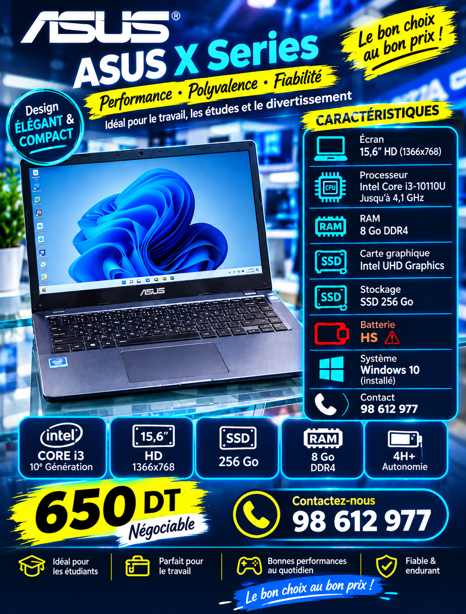
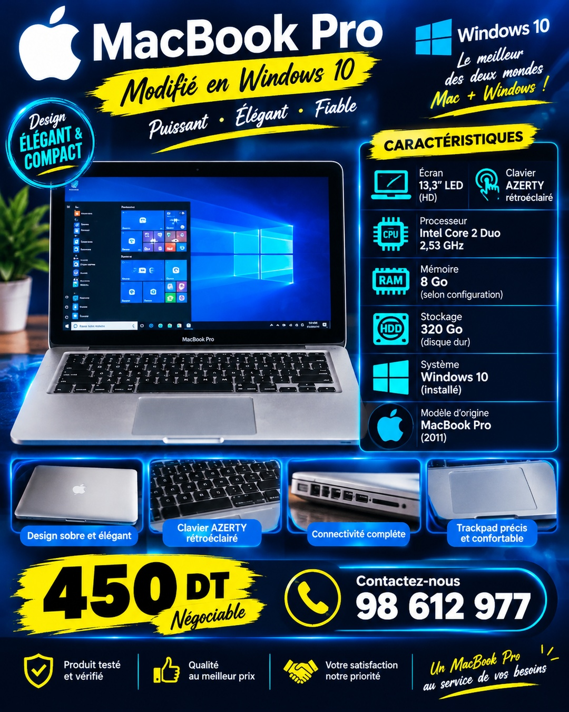

PC PORTABLEBatterie HS
ASUS X Series
Intel Core i3-10110U · RAM 8 Go DDR4 · SSD 256 Go · Écran 15,6″ HD · Intel UHD Graphics · Windows 10 installé.
650 DTNégociable
Demander
INFORMATIQUE • CONSEIL • SERVICE
Bienvenue chez Gsinfo. Découvrez notre sélection d'ordinateurs et contactez-nous pour toute information ou disponibilité.
📍 Rue Sidi Zitouni, Houmet Souk, Djerba
NOTRE SÉLECTION
Contactez-nous pour confirmer la disponibilité ou obtenir plus de détails.

Intel Core i3-10110U · RAM 8 Go DDR4 · SSD 256 Go · Écran 15,6″ HD · Intel UHD Graphics · Windows 10 installé.

Intel Core 2 Duo 2,53 GHz · RAM 8 Go · HDD 320 Go · Écran 13,3″ LED HD · Clavier AZERTY rétroéclairé · Windows 10 installé.
GSINFO À VOTRE SERVICE
Une sélection de PC portables et de matériel informatique.
Équipements et accessoires selon vos besoins.
Contactez-nous pour vous aider à choisir le matériel adapté.
CONTACT
Une question sur un produit ? Écrivez-nous directement sur Messenger ou passez à la boutique.